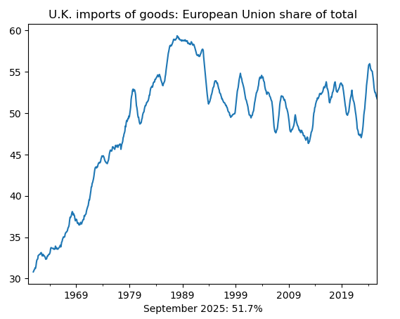

Part 1
A basic example of retrieving CPI inflation data using the sdmx1 library, converting to pandas, and plotting results.

Part 2
How to find datasets and parameters using dataflow and codelist methods, plus an advanced UK trade example.
A basic example of retrieving CPI inflation data using the sdmx1 library, converting to pandas, and plotting results.
How to find datasets and parameters using dataflow and codelist methods, plus an advanced UK trade example.
Part 1 showed a basic example of retrieving data. Here in Part 2, we explore how to discover available datasets and find the correct parameter codes using the sdmx1 library's dataflow() and codelist methods.
The dataflow() method returns information about all available datasets. We can search through these to find datasets of interest:
In[1]:
import sdmx
IMF_DATA = sdmx.Client('IMF_DATA')
# Get all dataflows
f = IMF_DATA.dataflow()
# Search for datasets containing "Trade"
{i: v for i, v in f.dataflow.items() if 'Trade' in v.name['en']}Out[1]:
{'ITG_WCA': <DataflowDefinition IMF.STA:ITG_WCA(2.0.4): International Trade in Goods, World and Country Aggregates>,
'CTOT': <DataflowDefinition IMF.RES:CTOT(5.0.1): Commodity Terms of Trade (CTOT)>,
'ITG': <DataflowDefinition IMF.STA:ITG(4.0.0): International Trade in Goods (ITG)>,
'TEG': <DataflowDefinition IMF.STA:TEG(3.0.2): Trade in Low Carbon Technology Goods (TEG)>,
'ITS': <DataflowDefinition IMF.RES:ITS(3.0.1): International Trade in Services (ITS)>,
'IMTS': <DataflowDefinition IMF.STA:IMTS(1.0.0): International Trade in Goods (by partner country) (IMTS)>}
The dictionary comprehension filters datasets whose English name contains "Trade". Each result shows the dataset ID (e.g., IMTS) and a description.
Once you identify a dataset, retrieve its structure to find the available dimensions. The dimensions determine how you construct the key for your data request:
In[2]:
# Get metadata for 'IMTS'
f = IMF_DATA.dataflow('IMTS')
dsd = f.structure['DSD_IMTS']
dsd.dimensions.componentsOut[2]:
[<Dimension COUNTRY>, <Dimension INDICATOR>, <Dimension COUNTERPART_COUNTRY>, <Dimension FREQUENCY>, <TimeDimension TIME_PERIOD>]
This tells us the IMTS dataset has four dimensions plus time: country, indicator, counterpart country (trading partner), and frequency. The key string must specify values for each dimension in this order.
Use the codelist attribute to find valid codes for each dimension. Here we look up available indicators:
In[3]:
# Indicator codes
codes = f.codelist.CL_IMTS_INDICATOR
sdmx.to_pandas(codes)Out[3]:
CL_IMTS_INDICATOR XG_FOB_USD Exports of goods, Free on board (FOB), US dollar MG_FOB_USD Imports of goods, Free on board (FOB), US dollar MG_CIF_USD Imports of goods, Cost insurance freight (CIF)... TBG_USD Trade balance goods, US dollar Name: International Trade in Goods (by partner country) (IMTS) Indicator, dtype: object
We can also search within a codelist. Here we find the code for "World" in the country list:
In[4]:
# Country codes - search for specific values
codes = f.codelist.CL_IMTS_COUNTRY
res = sdmx.to_pandas(codes)
res.loc[res.str.contains('World')]Out[4]:
CL_IMTS_COUNTRY G001 World Name: International Trade in Goods (by partner country) (IMTS) Country, dtype: object
Using what we've learned, let's calculate the European Union's share of UK goods imports over time. The key GBR.MG_CIF_USD.G001+G998.M requests UK imports from both World (G001) and EU (G998) at monthly frequency:
In[5]:
import pandas as pd
# Retrieve data: UK imports from World (G001) and EU (G998)
data_msg = IMF_DATA.data('IMTS', key='GBR.MG_CIF_USD.G001+G998.M')
# Convert to pandas
df = sdmx.to_pandas(data_msg).reset_index()
df = df.set_index(['TIME_PERIOD', 'COUNTERPART_COUNTRY'])['value'].unstack()
df.index = pd.to_datetime(df.index, format='%Y-M%m')With both series in our DataFrame, we can calculate the EU share and apply a 12-month moving average to smooth seasonal variation:
In[6]:
# Calculate EU share of UK imports of goods
eu_share = ((df['G998'] / df['G001']) * 100).rolling(12).mean()
# Create a line plot
title = "U.K. imports of goods: European Union share of total"
recent = f"{eu_share.index[-1].strftime('%B %Y')}: {eu_share.iloc[-1]:.1f}%"
ax = eu_share.plot(title=title)
ax = ax.set_xlabel(recent)Out[6]:
sdmx1 on PyPI - Installation and basic documentation
sdmx1 documentation - Full library reference
IMF Data Portal - Browse available datasets interactively